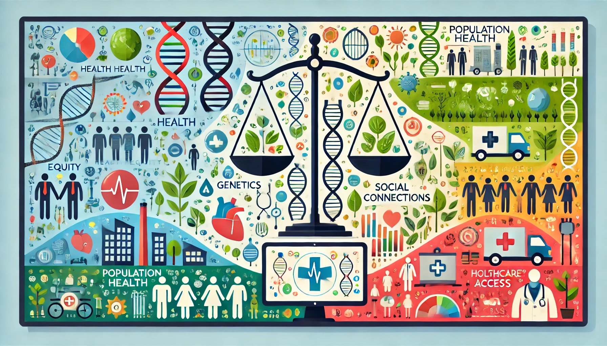
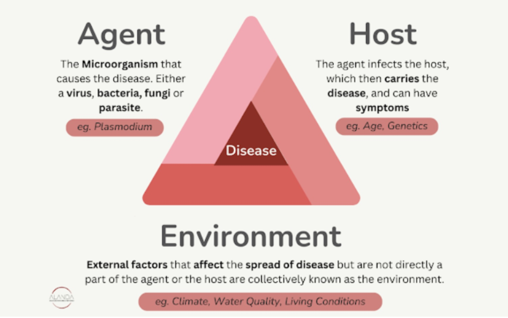
A basic model for infectious diseases with three components:
Example: Tuberculosis
Limitation: Does not fully explain chronic diseases.
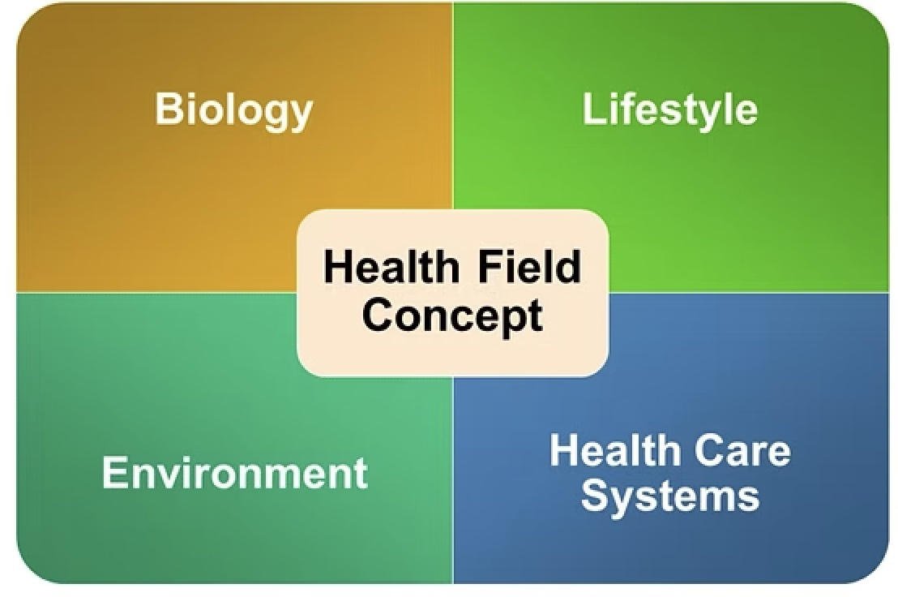
Example: Heart Disease
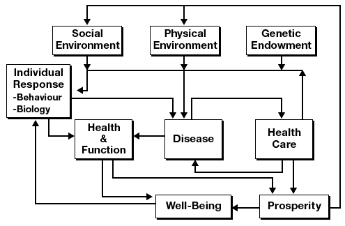
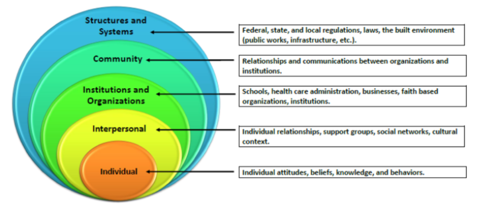
Example: Obesity Prevention
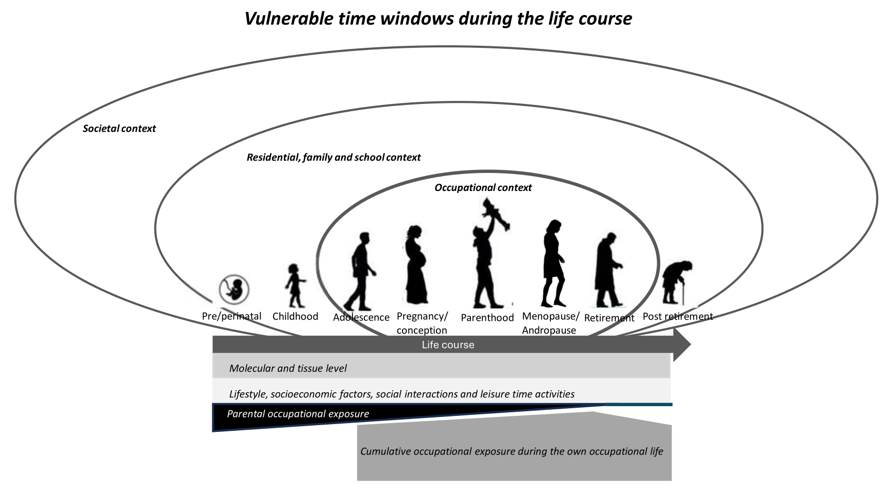
Example: Childhood Poverty & Health
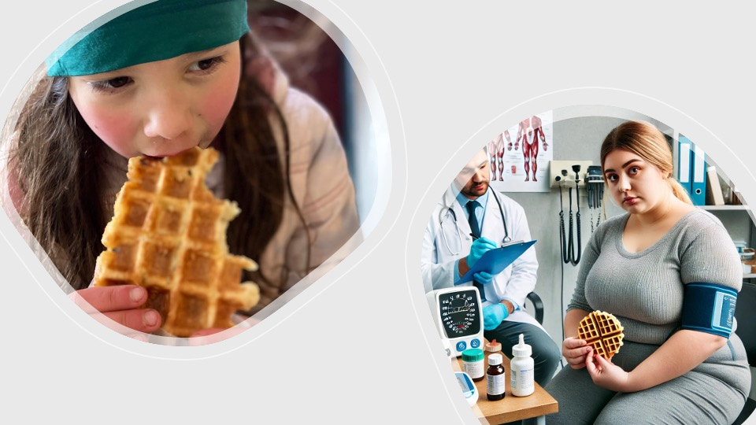
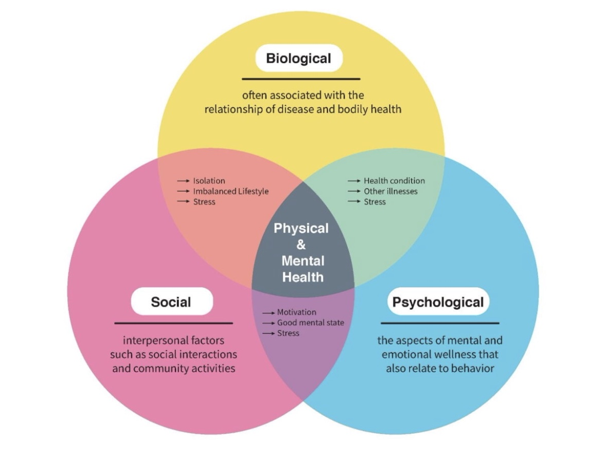
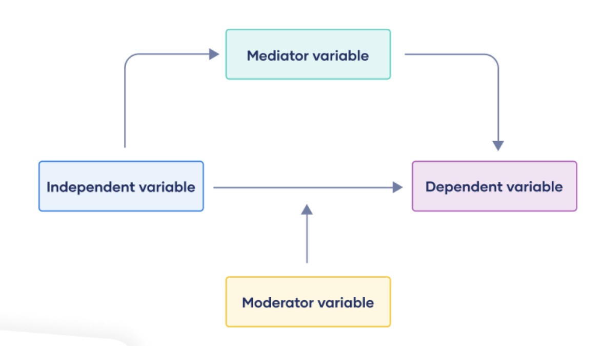
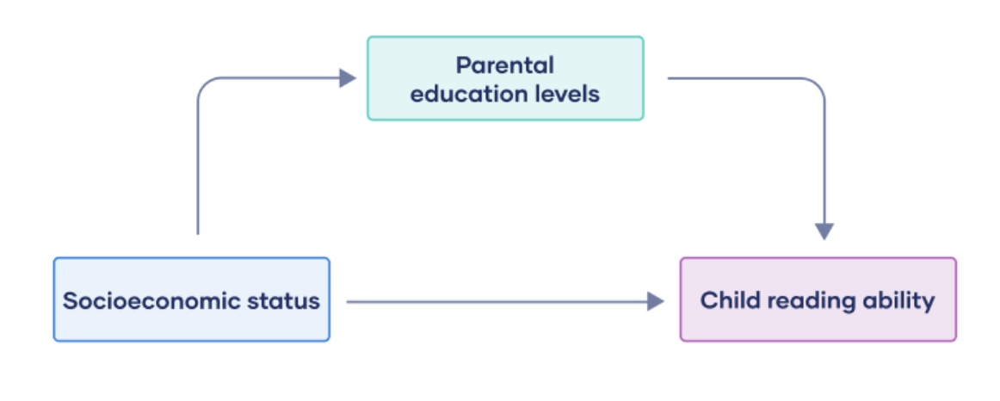
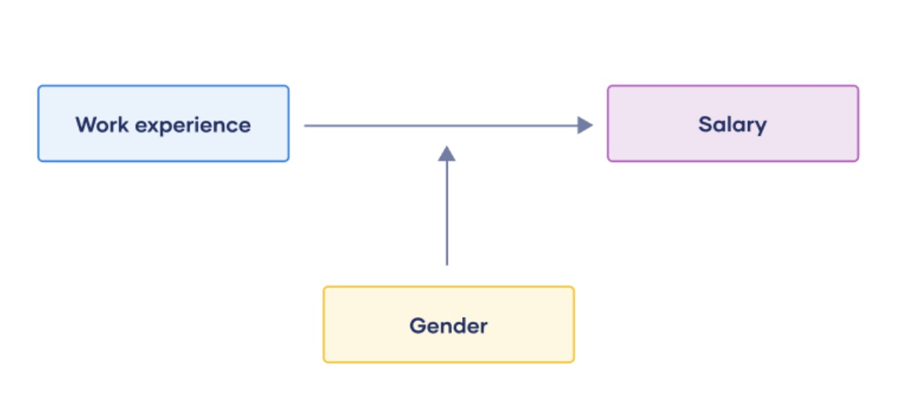
Reflection Questions:
Social and Economic Determinants